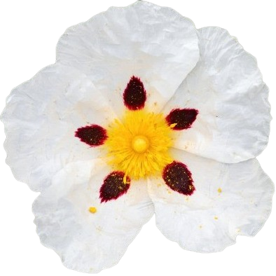

Labdanum is a brown resin from the plants Cistus landanifer (gum rockrose) and Cistus creticus (pink rockrose), which grows in the Mediterranean. In ancient times, it was collected by coming the beards and thighs of goats and sheep that grazed on the cistus shrubs. It was used as incense, to treats coughs, colds, menstrual problems, and rheumatism. Now, Labdanum is used mainly for perfumes, and it's scent is described as amber, sweet, woody, powdery, dry musk, or leathery.


 Asuka Langley
Asuka Langley 

 i love clovers!
i love clovers!